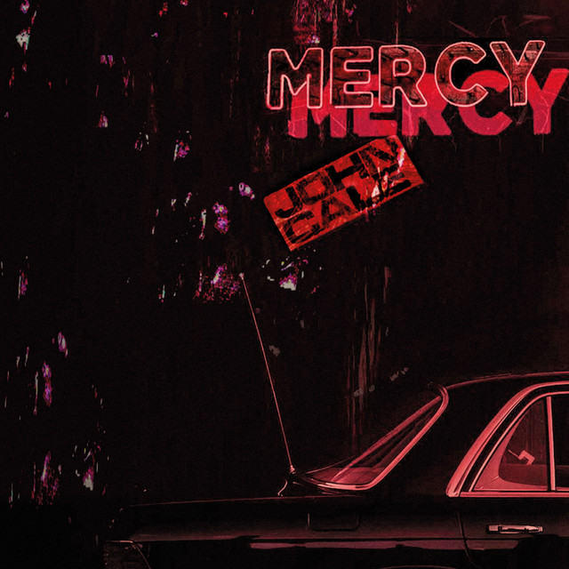

John Cale - Mercy



Información del álbum facilitada por discogs.com:
Fecha de lanzamiento: Desconocida
Géneros: Desconocidos
Estilos: Desconocidos
Pais: US
Votos: Media de 5.0 con 2 votos
Sello: Columbia
Alto Saxophone - Johnny Dodds
Banjo - Eddie Condon
Banjo - Johnny St. Cyr
Banjo - Mancy Carr
Bass - Pops Foster
Clarinet - Don Redman
Clarinet - Jimmie Noone
Clarinet - Jimmy Strong
Clarinet - Johnny Dodds
Compilation Producer - Phil Schaap
Cornet - Louis Armstrong
Drums - Baby Dodds
Drums - Kaiser Marshall
Drums - Paul Barbarin
Drums - Zutty Singleton
Guitar - Eddie Lang
Guitar - Lonnie Johnson (2)
Piano - Carroll Dickerson
Piano - Earl Hines
Piano - Joe Sullivan
Piano - Lil Hardin
Piano - Luis Russel
Producer - Richard M. Jones
Producer - Tommy Rockwell
Tenor Saxophone - Barney Bigard
Tenor Saxophone - Happy Caldwell
Trombone - Fred Robinson
Trombone - Honore Dutrey
Trombone - J.C. Higginbotham
Trombone - Jack Teagarden
Trombone - Kid Ory
Tuba - Pete Briggs
Vocals - Butterbeans
Vocals - Louis Armstrong
Vocals - Susie Edwards
Tracklist: